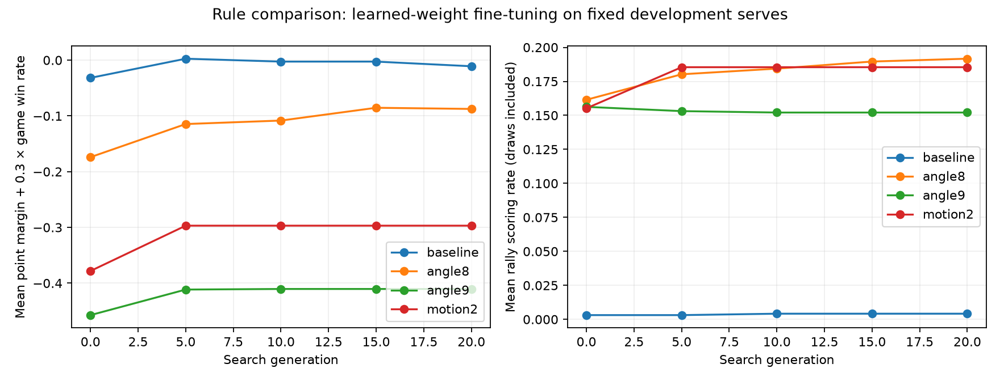

RALLY LAB / OFFENSIVE BALANCE
A different bounce.
A better game?
Experimental comparison · live Pong v3 unchanged
Four return laws, the same serves, stronger scripts and equally budgeted learned-weight training. The goal is meaningful placement and recovery over sustained exchanges.
No candidate earns a rules change yet.
The milder angle change still allows a guaranteed never-concede defense. The steeper-angle and moving-paddle candidates create some points against adaptive scripts, but their script mirror matches lean toward short rallies and first-receiver advantage. This is evidence against promoting these exact settings, not a claim that all Pong variants lack depth.
All four preserve horizontal return speeds 5–13, paddle speed 2, the same five serves and the 1,600-tick limit. The shortest cross-court flight remains 26 ticks (0.87 seconds). Real keyboard playability has not been tested.
Watch the same opening under four rules
Recorded evaluation trajectories. All panels use seed 1816495743, the first reserved seed, and the selected rally. The left player is the first named controller. Ended rallies stay visible while the others continue.
Loading recorded matches…30 ticks / second
The model in each panel is a separately adapted 6 → 64 → 64 → 3 Tanh network. These experimental weights are not new arena presets. Replays visualize measured states; no inference is being performed by this page.
Can stronger scripts create useful exchanges?
| Rules | Attack mirror: scored | Median returns¹ | First receiver wins¹ | Attack vs defense W/L/D | Never-concede defense |
|---|
| Current rules | 0.0% | — | — | 0 / 0 / 640 | Proven |
| Steeper returns · 8 | 0.0% | — | — | 0 / 0 / 640 | Proven |
| Steeper returns · 9 | 31.2% | 1.0 | 90.0% | 88 / 75 / 477 | Not established |
| Moving-paddle deflection | 14.4% | 1.0 | 93.5% | 43 / 11 / 586 | Not established |
64 held-out seeds × five rallies × both side assignments = 640 rallies per row. ¹ Among scored rallies only. W/L/D is from the attacker’s perspective. A mirror match gives both players the same policy; its side-paired game score is necessarily tied, but individual rallies can still be scored. “Not established” means this defensive proof failed to cover every serve—not that optimal attack is proven to win.
The angle-8 defense chooses a safe return and recovers into a verified safe region. This repairs the apparent weakness found by inspecting arbitrary returns. Its guarantee covers every standard serve and every legal opponent action sequence, with exact discrete movement and clamping.
A useful difference at intermediate skill
In a separate diagnostic test, moving-paddle deflection lets the attacker beat simple interception in 314 of 320 rallies, with a median of 15 returns among scored rallies. Against a defender that deliberately chooses safer returns, it gets 12 wins, 2 losses and 306 draws on those same diagnostic seeds. Return selection matters, but the strong mirror results above still expose early serve bias.
This paragraph uses the 32-seed exploratory set, not the 64-seed final set. The interceptor predicts incoming landing and recovers sensibly; it does not optimize its outgoing return.
What the learned networks actually gained
Each candidate starts from the same fully learned Contender and receives 20 search generations, nine population members, identical training/development seeds and three opponents: adaptive attack, adaptive defense and frozen Contender. All 84,721,236 active training decisions are recorded. Different rally lengths mean equal search opportunities, not identical decision counts.
| Rules | Opponent | Starting weights W/L/D | Retrained weights W/L/D | Retrained point margin · 95% CI |
|---|
| Current rules | Adaptive attacker | 0 / 96 / 544 | 0 / 12 / 628 | -0.030 to -0.009 |
| Current rules | Adaptive defender | 0 / 30 / 610 | 0 / 9 / 631 | -0.023 to -0.006 |
| Steeper returns · 8 | Adaptive attacker | 0 / 403 / 237 | 0 / 329 / 311 | -0.552 to -0.473 |
| Steeper returns · 8 | Adaptive defender | 0 / 179 / 461 | 0 / 164 / 476 | -0.294 to -0.222 |
| Steeper returns · 9 | Adaptive attacker | 0 / 525 / 115 | 0 / 502 / 138 | -0.819 to -0.747 |
| Steeper returns · 9 | Adaptive defender | 0 / 538 / 102 | 0 / 415 / 225 | -0.686 to -0.613 |
| Moving-paddle deflection | Adaptive attacker | 1 / 591 / 48 | 1 / 526 / 113 | -0.848 to -0.794 |
| Moving-paddle deflection | Adaptive defender | 1 / 207 / 432 | 1 / 239 / 400 | -0.417 to -0.328 |
Positive point margin favors the learned model. Intervals resample whole paired seeds, not individual rallies. These four short adaptation runs test learnability; they do not establish a training ceiling or reproduce full self-play training from scratch.

Curves use development seeds. Final table uses a separate reserved set. The mean scoring curve includes frozen Contender; these gains do not establish stronger attack against the scripts. The model remains a plain network with 4,803 learned parameters: no trajectory calculations or scripted decisions are embedded in its inference graph.
How far is this from normal Pong?
Angle-only returns preserve the familiar rule: hit higher or lower on the paddle to change the outgoing direction. The experiment merely makes those directions steeper. In a published interview, Nolan Bushnell describes this placement tradeoff as central to Pong. Pong design interview ↗
Moving-paddle deflection adds one stroke mechanic: the paddle’s actual direction at contact adds −2, 0 or +2 vertical units per tick. There is no curved flight, extra button, persistent spin or hidden state. It is a modest Pong variant, but it adds a timing demand that angle-only play avoids.
Our bounded paddle speed, five seeded rallies and loop/timeout draws are already custom competition choices. Original Pong used knob controls, and Al Alcorn describes increasing horizontal speed in three steps as a rally continued. A rally speed increase would therefore be historically grounded, though a reproducible model arena would need to expose any new speed-stage state. Alcorn’s Smithsonian oral history ↗
Methods and limits
The candidates change only vy = floor(V × offset / 15 + 0.5) + K × actual_movement_direction: current (V=5,K=0), angle 8, angle 9, or motion (V=5,K=2). Python and an independent TypeScript implementation agree on explicit edge cases and complete rally fixtures. The existing arena engine is unchanged.
Adaptive scripts enumerate feasible paddle contact positions and final movement, then plan placement and recovery using each rule’s physics. They are stronger reference opponents, not optimal game solvers. A five-tick delayed-observation defender is included only as a timing sensitivity test; it is not a substitute for a human playtest. Loop exits are disabled for that stateful controller.
All matchups and draw reasons
| Rules | Pair | W / L / D | Before 2 returns² | Scores after 6+ returns² | Loop draws | Timeout draws |
|---|
| Current rules | attack:attack | 0 / 0 / 640 | 0.0% | 0.0% | 640 | 0 |
| Current rules | attack:defend | 0 / 0 / 640 | 0.0% | 0.0% | 640 | 0 |
| Current rules | defend:defend | 0 / 0 / 640 | 0.0% | 0.0% | 640 | 0 |
| Current rules | attack:delayed | 80 / 0 / 560 | 1.6% | 5.2% | 0 | 560 |
| Current rules | initial:attack | 0 / 96 / 544 | 6.2% | 5.2% | 544 | 0 |
| Current rules | initial:defend | 0 / 30 / 610 | 4.7% | 0.0% | 610 | 0 |
| Current rules | trained:attack | 0 / 12 / 628 | 1.9% | 0.0% | 628 | 0 |
| Current rules | trained:defend | 0 / 9 / 631 | 1.4% | 0.0% | 631 | 0 |
| Current rules | trained:initial | 14 / 5 / 621 | 3.0% | 0.0% | 474 | 147 |
| Current rules | trained:v2 | 173 / 3 / 464 | 4.2% | 21.2% | 397 | 67 |
| Current rules | trained:trained | 3 / 3 / 634 | 0.9% | 0.0% | 624 | 10 |
| Steeper returns · 8 | attack:attack | 0 / 0 / 640 | 0.0% | 0.0% | 640 | 0 |
| Steeper returns · 8 | attack:defend | 0 / 0 / 640 | 0.0% | 0.0% | 640 | 0 |
| Steeper returns · 8 | defend:defend | 0 / 0 / 640 | 0.0% | 0.0% | 640 | 0 |
| Steeper returns · 8 | attack:delayed | 0 / 0 / 640 | 0.0% | 0.0% | 0 | 640 |
| Steeper returns · 8 | initial:attack | 0 / 403 / 237 | 26.6% | 2.7% | 237 | 0 |
| Steeper returns · 8 | initial:defend | 0 / 179 / 461 | 13.3% | 2.3% | 461 | 0 |
| Steeper returns · 8 | trained:attack | 0 / 329 / 311 | 25.8% | 0.2% | 311 | 0 |
| Steeper returns · 8 | trained:defend | 0 / 164 / 476 | 15.2% | 0.0% | 476 | 0 |
| Steeper returns · 8 | trained:initial | 340 / 295 / 5 | 22.7% | 15.5% | 5 | 0 |
| Steeper returns · 8 | trained:v2 | 249 / 374 / 17 | 24.1% | 30.2% | 17 | 0 |
| Steeper returns · 8 | trained:trained | 320 / 320 / 0 | 25.6% | 12.2% | 0 | 0 |
| Steeper returns · 9 | attack:attack | 100 / 100 / 440 | 19.1% | 0.0% | 440 | 0 |
| Steeper returns · 9 | attack:defend | 88 / 75 / 477 | 16.2% | 0.9% | 477 | 0 |
| Steeper returns · 9 | defend:defend | 58 / 58 / 524 | 13.4% | 0.0% | 524 | 0 |
| Steeper returns · 9 | attack:delayed | 187 / 75 / 378 | 27.8% | 2.7% | 0 | 378 |
| Steeper returns · 9 | initial:attack | 0 / 525 / 115 | 28.9% | 4.2% | 115 | 0 |
| Steeper returns · 9 | initial:defend | 0 / 538 / 102 | 15.2% | 32.5% | 102 | 0 |
| Steeper returns · 9 | trained:attack | 0 / 502 / 138 | 29.1% | 3.8% | 138 | 0 |
| Steeper returns · 9 | trained:defend | 0 / 415 / 225 | 15.6% | 13.0% | 225 | 0 |
| Steeper returns · 9 | trained:initial | 318 / 312 / 10 | 38.6% | 3.0% | 10 | 0 |
| Steeper returns · 9 | trained:v2 | 223 / 408 / 9 | 36.9% | 8.6% | 9 | 0 |
| Steeper returns · 9 | trained:trained | 317 / 317 / 6 | 38.4% | 3.4% | 6 | 0 |
| Moving-paddle deflection | attack:attack | 46 / 46 / 548 | 13.4% | 0.0% | 548 | 0 |
| Moving-paddle deflection | attack:defend | 43 / 11 / 586 | 7.5% | 0.0% | 586 | 0 |
| Moving-paddle deflection | defend:defend | 5 / 5 / 630 | 1.6% | 0.0% | 630 | 0 |
| Moving-paddle deflection | attack:delayed | 629 / 0 / 11 | 40.2% | 1.9% | 0 | 11 |
| Moving-paddle deflection | initial:attack | 1 / 591 / 48 | 17.0% | 47.0% | 48 | 0 |
| Moving-paddle deflection | initial:defend | 1 / 207 / 432 | 7.5% | 3.9% | 432 | 0 |
| Moving-paddle deflection | trained:attack | 1 / 526 / 113 | 17.8% | 36.9% | 113 | 0 |
| Moving-paddle deflection | trained:defend | 1 / 239 / 400 | 8.6% | 5.5% | 400 | 0 |
| Moving-paddle deflection | trained:initial | 349 / 280 / 11 | 12.5% | 49.7% | 11 | 0 |
| Moving-paddle deflection | trained:v2 | 246 / 340 / 54 | 12.8% | 47.0% | 54 | 0 |
| Moving-paddle deflection | trained:trained | 284 / 284 / 72 | 13.4% | 39.7% | 72 | 0 |
² Share of all rallies. Initial = original Contender; trained = the selected experimental adaptation; v2 = the frozen original Selfplay v2. A transfer loss by an old model is not itself evidence of better rules.
Source, frozen hashes, seed lists, learning logs, weights, fixtures and every point result are under training/results/offense-study/. Rebuild with .venv/bin/python training/scripts/offense_report.py.